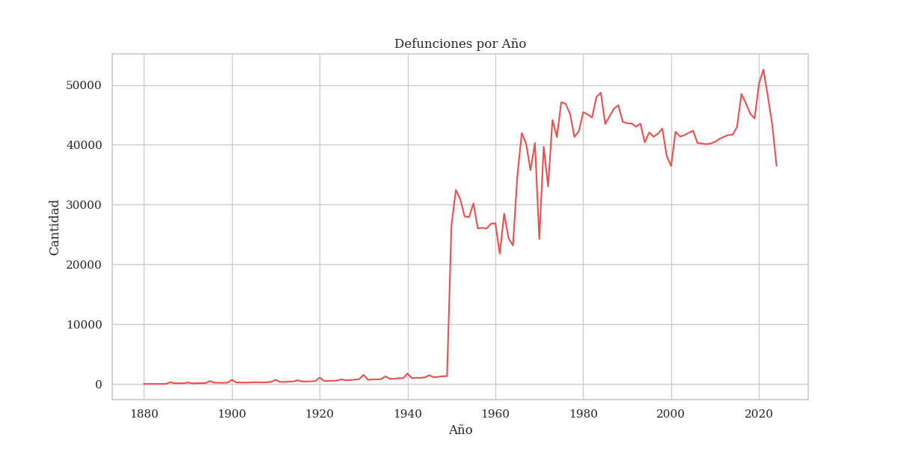
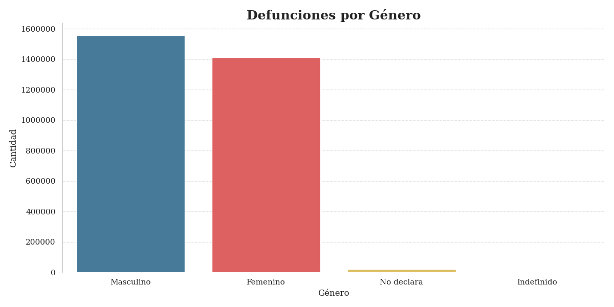
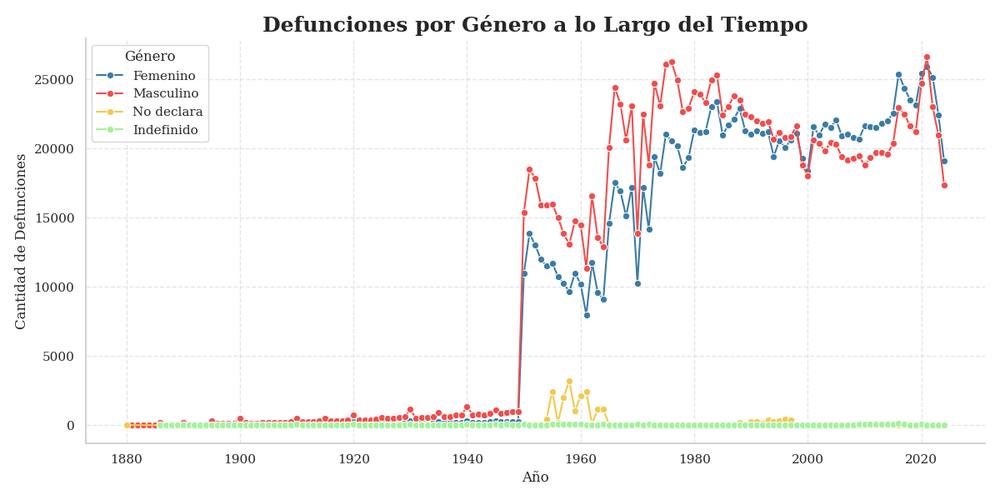

Explora las defunciones en Argentina
El dataset contiene información sobre las defunciones ocurridas en Argentina desde 1880 hasta 2024. Contiene variables como el año de defunción, la edad y el género de las personas fallecidas.
Este gráfico muestra la cantidad de defunciones registradas en cada año desde 1880 hasta 2024. Es evidente que existen picos importantes que podrían estar relacionados con eventos sociales o sanitarios, como crisis económicas o pandemias.
Este gráfico de barras compara la cantidad de defunciones entre hombres y mujeres en Argentina. Como se puede observar, los registros varían a lo largo de los años, lo que podría estar influenciado por diversos factores sociales y demográficos.
Este gráfico analiza las defunciones desglosadas por género a lo largo de los años. Permite observar las tendencias temporales y comparar la evolución de las defunciones entre hombres y mujeres.
